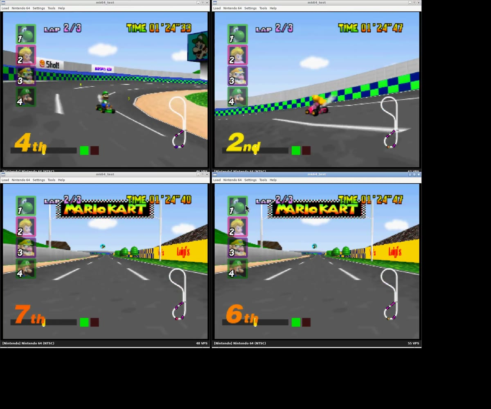
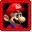
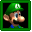
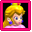
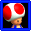
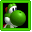
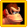
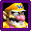

Online menu & rooms
Host a room, join by code, or find public rooms. Player names and lobby presence are shown in-game; the host starts the session. Peers need compatible builds.
 ONLINE MODSOURCE ↗
ONLINE MODSOURCE ↗N64 MOD PROJECT / NETPAK64 / DEV BUILD v76
Online multiplayer for Mario Kart 64. Modified game code, a NetPak64-enabled ares build, and a UDP relay. Race and Battle mode are running in emulator tests.
This is a work-in-progress mod, not plug-and-play netplay. The current build still has driving, camera, and cross-platform bugs. Source, test footage, and build notes are below.








MOD OVERVIEW
Host a room, join by code, or find public rooms. Player names and lobby presence are shown in-game; the host starts the session. Peers need compatible builds.
Peers exchange controller inputs and run the simulation locally. The showcased race tests use two or four separate emulator instances—not four views from one emulator.
Big Donut has four-peer development footage. Block Fort, Double Deck, and Skyscraper are in the qualification plan; there is no all-arena pass yet.
The development code records applied inputs and simulation hashes. Spectator/replay camera controls exist in the source; their presence is not a blanket player-experience sign-off.
SCREENSHOT GALLERY / CLICK TO ENLARGE
Actual frames from the public development recordings. No mock game scenes. The four-view images include emulator chrome and test overlays; camera and driving defects are still open.
GAMEPLAY & TEST RECORDINGS
All four original recordings, with build context. These are test runs—not trailers edited to imply the mod is finished. Playback is manual; no autoplay audio.
Shared-input CPU takeover on four ares instances. Known wall-contact, idle-driver, and chase-camera problems. The 3,732-frame comparison is a sync result, not a gameplay-quality pass.
Open original MP4 ↗Four independent emulator views with balloons and item interactions. Battle uses the older waypoint driver; this clip does not qualify arena navigation or console compatibility.
Open original MP4 ↗An earlier test shows local input diagnostics beside gameplay. Kept as development history; not representative of v76 driving or a clean player-facing HUD.
Open original MP4 ↗The older host/join recording includes menus and subsequent racing. It is useful for following the flow, not a current installation tutorial.
Open original MP4 ↗UNDER THE HOOD
The game maintains a shared input history. Each participant sends its buttons and stick values; every peer applies the same inputs to the same logical frame. A missing required input stalls simulation advancement rather than guessing the remote kart’s movement.
This is not a video stream or a claim of zero-latency rollback. Network delay affects control latency and stalls. The source negotiates input delay from lobby RTT; no end-to-end latency benchmark is claimed here.
Automated race clients send a reserved input marker. All peers convert that slot from PLAYER_HUMAN to PLAYER_CPU on the same applied frame. The controller lane is neutral while native CPU AI drives the kart. The replay tape preserves the marker.
Human participants remain controller-driven. Battle does not use native race CPU navigation: it keeps the older waypoint fallback. That is why race and Battle automation need separate fixes.
Read net_race.c ↗The v76 Mario Raceway four-instance run compared frames 0–3731 without divergence. It does not establish all-course compatibility, a complete-race quality pass, correct local cameras, or console parity. The user’s later visual review reported wall contact, stalled drivers, and orbiting cameras.
DEVELOPER BUILD / NOT A ROM MIRROR
v76.The build system supports multiple original revisions, but these showcase tests use the US development build. Do not assume PAL, arbitrary emulator revisions, or mixed game builds will interoperate.
Exact end-user installation and relay configuration are not yet published as a verified walkthrough. Use the repository instructions and release manifest for development; don’t treat this page as a complete setup recipe.
KNOWN BUGS / TEST COVERAGE
Four-view footage shows camera movement unlike a normal active-player chase view. Earlier revisions attempted pan-rate and local-camera isolation fixes. Those release notes are history, not proof the current view is correct.
Native CPU takeover has not passed gameplay qualification. Repeated collisions and non-progress still need reproduction. Battle’s waypoint driver needs arena-aware navigation and item/opponent strategy.
The inherited v75 manifest lists a console-only kart-1 physics desync on Big Donut and pause-at-end issues. v76’s emulator hash result does not close them. Physical hardware remains unverified end-to-end.
First: reproduce the orbit and driving failures against human-controlled product runs. Then validate the local chase camera for every seat, complete standard-length Mario Raceway races, stress traffic/branches/rescue, and expand to all 16 race courses and four Battle arenas.
Full scenarios also cover items, forced recovery, mixed human/automated seats, pause/resume, results/rematch, and supported leave/drop behavior. Driving, camera, simulation, and media each get a separate verdict.
Full driving automation project plan ↗Game commit/ROM checksum · emulator revision · course/mode · peer count · host/joiner seat · exact steps · expected vs. actual result · log/hash frame if available · screenshot or short clip.
GAME BUG TRACKER ↗